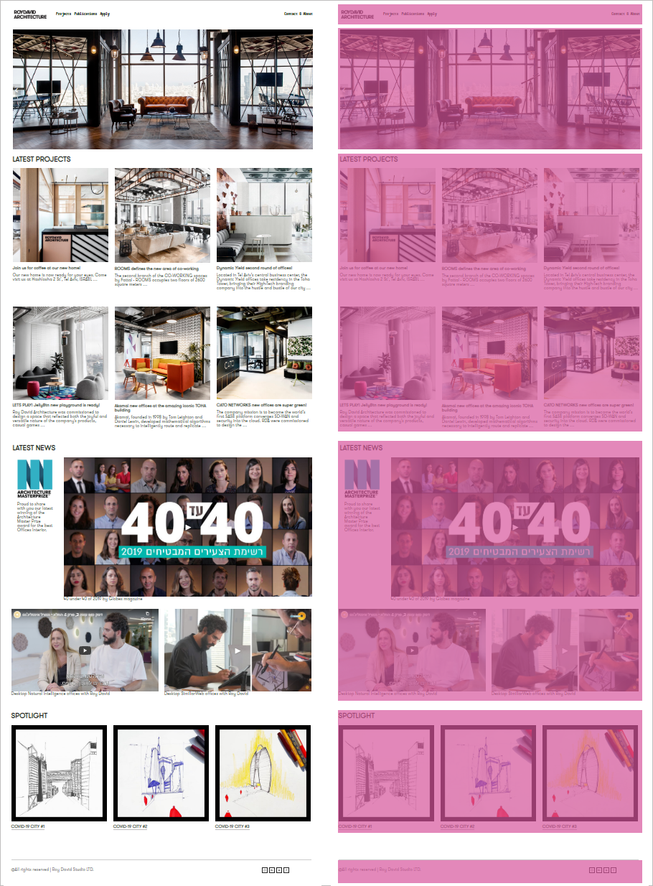

чередуйте «плотный» текст абзацев с выноской на полях. Окружите выноску белым полем, и она станет акцентом;

разделите страницу на «этажи»: текст чередуйте с иллюстрацией. «Этаж» можно также создать за счет цветных блоков.

Евгения Черешкова, автор, редактор, SEO-копирайтер
В прошлой статье мы рассказали, как дизайнеру самостоятельно писать для своего сайта. И упомянули, что текст — это не главное.
Публикация должна содержать полезную для читателя информацию. Но подавать ее нужно не только через текст, а больше через визуальные приемы. Через верстку вы помогаете пользователю легче и быстрее воспринимать информацию.
В этой статье рассказываем:
Любую страницу сайта можно воспринимать как серию блоков. Иллюстрация — это блок. Абзац — тоже блок. Заголовок, перечень ссылок, цитаты, выноски на полях — блоки. Они могут стоять друг под другом или рядом, создавать монолитную стену или привлекать внимание как акцент.
Представьте, будто вы строите аккуратный домик. Если какой-то блок «выпирает» или рядом стоит слишком много акцентов — архитектура развалится.
Представьте, будто вы строите аккуратный домик. Если какой-то блок «выпирает» или рядом стоит слишком много акцентов — архитектура развалится.
Страница смотрится аккуратно, если все блоки расположены по принципу модульности. То есть каждый блок выглядит как прямоугольник и все вместе они вписываются в прямоугольник.

Главная страница
сайта дизайн-студии RoyDavid Architecture
разделена на четкие блоки. Внутри каждого блока заложен свой ритм — где-то
три колонки, где две.
Страница смотрится аккуратно и динамично
одновременно
Модули необязательно должны быть горизонтальными. Узкие колонки со ссылками характерны для новостных сайтов. На скриншоте пример главной страницы журнала Dezeen
Модули смотрятся аккуратно, если они не пересекаются друг с другом.
Необязательно каждый прямоугольник заполнять информацией от и до. Напротив, если не использовать пустое пространство, страница станет визуально перегруженной. Модуль станет прямоугольником за счет границ соседних блоков или за счет расположения элементов по углам.
Элементы в блоке должны стоять ближе друг к другу, чем к другим блокам. То есть:
В обоих примерах заголовки стоят на одинаковом расстоянии от предыдущего и следующего блока с текстом. Смотрится монотонно
Здесь блоки явно отделены друг от друга расстоянием: перед каждой новой частью отступ больше, чем от заголовка до соответствующего ему текста
В композиции картины, интерьера, книжной страницы отлично работает контраст. Используйте контраст и на web-странице:
чередуйте «плотный» текст абзацев с выноской на полях. Окружите выноску белым полем, и она станет акцентом;
разделите страницу на «этажи»: текст чередуйте с иллюстрацией. «Этаж» можно также создать за счет цветных блоков.
Простое, но четкое деление на «этажи» на сайте студии BOOONT. Блоки четко читаются, не мешают друг другу. За счет единой цветовой палитры не спорят и гармонично смотрятся как единое целое